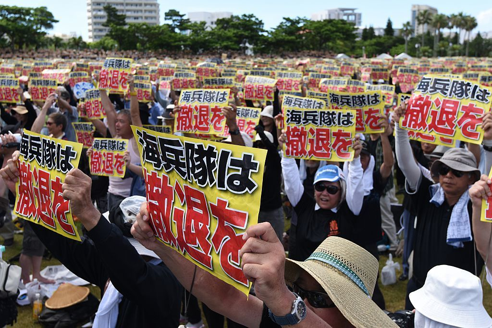
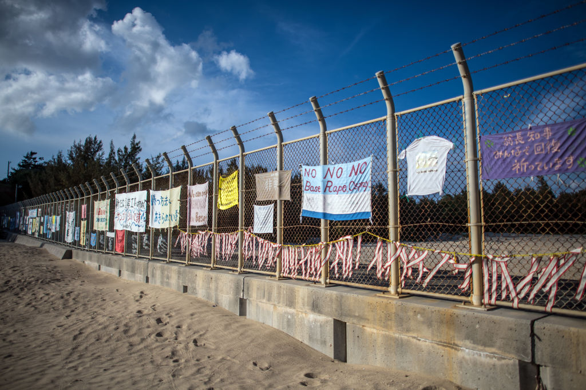
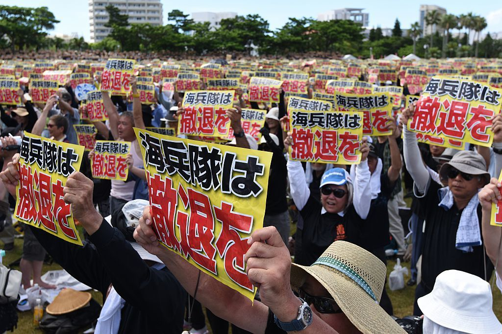
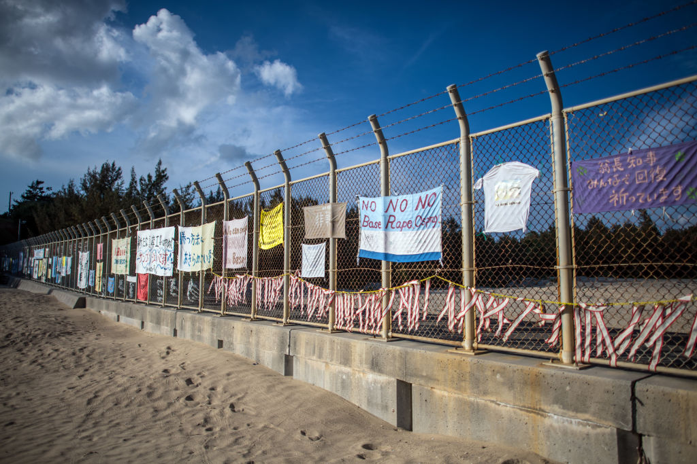

Description: Geographically blessed as a regional node of connectivity, Okinawa, the archipelago that lies on the Southern tip of Japan, historically has interacted and navigated with powerful players in the region: caught up between the power struggles between China and Japan; colonized by Japan and forced to assimilate; subsumed under the Japanese “imagined community” while still being treated as an unreliable, inferior, uncivilized “other”; occupied by American forces until 1972. Okinawa is more often than not culturally represented as a perpetually festive landscape permeated with exoticism and far from modern western civilization. It has been repackaged—locally, nationally, and internationally—into a fantasy paradise with beautiful beaches, alluring local women, and primitive practices, where one could have a temporary escape from a suffocating modern reality that demands capitalistic venture and industrial work ethics. But what that fantasy effaces from the picture is the reality that Okinawa has been the home of a vast complex of U.S. military bases to this day, and continued militarization has structurally restrained the diversification of and perpetuated the impoverishment of the local economy to the extent that it remains the poorest prefecture in Japan. Though Japan tops the number of overseas American military bases in the world, Okinawa, less than 1% of the Japanese territories, hosts more than 70% of the U.S. military bases located in Japan. Over the course of post-war discourse in Okinawa, there has been a series of rampant incidents that ignited mass anger amongst the locals against the bases, which include aircrafts crash into civilian areas, environmental impact, noise pollution, and other crimes committed by both military forces as and base workers. These incidents fueled the “base politics” that has deeply bifurcated the Okinawan society between anti-base—who resent the presence of bases for social, political, environmental and/or personal reasons—and pro-base sects—who, generally speaking, benefit from, rely upon, and/or are in support of the structure of military complex.
Bases are largely out of our consciousness; most people rarely question the continued the purpose of the installations, or the impact that continued militarization has had on the locals. Rather, most people regard the overseas bases, largely a postwar as well as Cold War legacy. That is basesare an essential part of the U.S.’s grand strategy to safeguard national security. People seldom ponder over and the media fails to address the structural asymmetry the bases entail: while there are no foreign bases on the US soil, approximately 800 American bases are scattered around the globe, more than any other national actors had ever had throughout history. During the Cold War, the expansion of base s was served as a means to contain the Soviet as well as the Communist threats; but after the collapse of the Communist bloc, both U.S. Republicans and Democrats double down on the rhetoric of US military bases emphasizing the role they play abroad in serving its interests, manifested in Bush’s hawkish foreign policy and Obama’s policy of “pivot to Asia.” Of all the costs incurred locally from hosting the U.S. military bases, David Vine highlights what he refers to as “human” costs and environmental problems that Okinawa has been facing under the continued militarization coupled with militarized capitalistic economy, among which sexual assaults of local women instigates the most widespread furor and anti-American sentiment in Okinawa.
It is here that Okinawa’s relationship with the U.S. military bases, and its historical continuity of sexual violence and labor that demands our urgent attention. Among all the problems caused by the heavy presence of the U.S. military bases in Okinawa, cases of military-related rape have instigated not only a huge wave of local furor, anti-base and anti-American sentiment but also domestic political schism over the installation of U.S. military bases. In 1995, a gang rape case of a 12-year-old girl led to enormous outrage that resulted in one of the largest postwar demonstrations in Okinawa with about ninety thousand protestors. Waves of banners with the same slogan, “no rape no base no tears” can be spotted; some others are written in Japanese say “eradication of the U.S. marine forces.” To this day, the twelve-year-old shōjo (maiden) who was raped 27 years ago continues to be the symbol for and a reminder to many Okinawans of American military brutality, motivating anti-base proponents to engage in their political protests and activism.
However, we should be cautious with interpreting the “base politics” through the Manichean lens by treating Japan as victims, on the one hand, and the U.S. as perpetrators, on the other. The mass protests in Okinawa are more often than not trivialized by the Japanese official efforts as the “Okinawa problem,” hinting at the political irrelevance to the mainland Japan. It is unsurprising to see the mainland police forces are dispatched to Okinawa to quell the protests around the U.S. military bases in Okinawa. There was one instance in 2016, where a riot police officer from Osaka cast verbal abuse against protestors as dojin, or a derogatory term for the aboriginals. This inappropriate remark sparked much furor, and brought to light an uncomfortable truth that speaks to a longstanding post-colonial structural violence/discrimination against Okinawa that the Japanese government as well as wider public has been masquerading. The subsequent disagreements between the Japanese progressive and conservative parties over whether or not to terminate the leasing of lands in Okinawa to the American military have given rise to years of tensions, protests, and political rivalry. Conservative Japanese politicians have claimed that American bases in Okinawa are necessary for geopolitical reasons, which, according to them, are to serve as a deterrence against the threats particularly from China and North Korea. Although the question of whether the protection from the U.S. military is necessary has been contested among Japanese politicians, it is an incontrovertible fact that Okinawa bears a disproportionate number of bases for the rest of Japanese mainlanders who need reassurance of security and alliance without wanting to have the visibility of bases in their backyards.
Some feminist scholars and activists, such as Takazato Suzuyo and Cynthia Enloe, have raised the concerns about how the anti-base protests in Okinawa could potentially masquerade the gendered violence at issue by exploiting rape to serve the anti-base political agenda. These feminist critiques lead people to question if the large-scaled protest is about sexual violence against women or about largely nationalistic ego using women’s bodies as sites for contestation over wounded masculinities. For instance, after the murder of Rina Shimabukuro by an ex-marine, Kenneth Gadson, some pro-base locals and Japanese news media supported the baseless rumor that Shimabukuro was secretly dating Gadson and pregnant with his child. It was, according to them, Gadson’s wife who killed Shimabukuro as the wife found out this supposed truth. Whereas anti-base protestors tend to brush away the potential romance hypothesis. According to journalist Chiyomi Sumida, if the female victim is either dating or married to U.S. military personnel, “you don't get much sympathy from the public,” because one would be seen as “you asked for it.” That leads to another question why the rape of a 12-year-old schoolgirl caused so much more rage than any other crimes. The narrative of a nameless, helpless girl is powerfully seductive for some patriarchal and nationalistic protestors who assume the role of paternalistic protectors. The abstract image of suffering shōjo is easy to be preyed upon and reconfigured into the metaphoric bearer of Okinawan suffering, a token of exchange subordinate to the political and military calculus in the interest of the larger collective.
Different social actors—politicians, forum discussants, pro/anti-base people, students and so forth—often sound entitled to talk about victims’ assaulted bodies as if they are the sites upon which one could freely cast speculative remarks or narratives. Those noises somehow assume to know the “whys” and “hows” of raped victims’ complex affective realities. But the truth, on the contrary to the hubristic assumption, is no one but victims themselves know the totality of pain that rape entails; no one but victims themselves have to live in, live with, and live through the bodies that carry remnants of fear, pain, shame, and/or tears in their everyday lives. I caught myself frantically looking for victims’ own accounts/realities, but to no avail. Only scant comments about victims’ fathers, who generally expressed their strong desire to just kill the rapists themselves, are available. Of all the noises of narratives about victims, the protagonists of the stories are grossly absent. In actuality, according to the local activists working closely with rape victims, most of the rape cases do go unreported. Though their speeches or bodies can be found nowhere in plain sight, the Okinawan rape victims commands a haunting presence that looms over and takes a grip on the island, Okinawans as people(s), and the larger geostrategic landscape. Silent rape victims have the quiet power to mobilize political clashes and affective surge within and beyond Okinawa; their very silence is a painful and uncomfortable reminder of the simmering tension and dissonance under the culturally constructed image of Okinawa as a perpetually festive land and Okinawans as happy objects.
Source: Bibilography Johnson, Akemi. Night in the American Village: Women in the Shadow of the U.S. Military Bases in Okinawa. New York: The New Press, 2019. Ko, Mika. Japanese Cinema and Otherness: Nationalism, Multiculturalism and the Problem of Japaneseness. Sheffield Centre for Japanese Studies/Routledge Series. London ; New York: Routledge, 2010. Vine, David. Base Nation: How U.S. Military Bases Abroad Harm America and the World. (United States: Henry Holt and Company, 2015. https://www.japantimes.co.jp/news/2016/10/19/national/police-officer-dispatched-osaka-insults-protesters-okinawa/ https://www.npr.org/sections/thetwo-way/2016/06/19/482669249/photos-thousands-protest-against-u-s-military-presence-in-okinawa-japan https://www.bbc.com/news/world-asia-20024609 https://www.healthytravelblog.com/2017/10/04/blue-zones-the-healthiest-places-on-earth-and-what-you-can-learn-from-them/ https://www.jacobinmag.com/2019/11/night-american-village-review-okinawa-base
 


